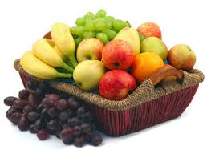

Fogyni lehet testmozgással és diétázással is.
A testmozgással gyorsabban lehet fogyni de nagyobb erőbefektetés kell hozzá mint a diétázáshoz.
A diétázáshoz pedig nagyobb akaraterő kell, hogy egyes ételek csábításának ellen tudj állni.
És lehet a testmozgást meg a diétázást együtt is csinálni annak van a legnagyobb hatása, ez az egyik legyorsabb természetes fogyási lehetőség is.
Testmozgás:
| Hétfő | Kedd | Szerda | Csütörtök | Péntek | Szombat | Vasárnap | |
|---|---|---|---|---|---|---|---|
| Reggel | Intenzív futás 30-40 perc | Intenzív szobabicikizés 1 óra | Intenzív futás 30-40 perc | Intenzív szobabicikizés 1 óra | Intenzív futás 30-40 perc | Intenzív szobabicikizés 1 óra | Pihenő nap |
Délután Intenzív futás 20 perc utána egyből hanyadtfekvésben tartás 15mp, bicska 10db, ülőtartás 15mp, ablaktörlő 5-5 oldalanként 10kör pihenés nélkül minden nap.
Diétázás:
| Hétfő | Kedd | Szerda | Csütörtök | Péntek | Szombat | Vasárnap | |
|---|---|---|---|---|---|---|---|
| Reggeli | Zabpehely | Zabpehely | Zabpehely | Zabpehely | Zabpehely | Zabpehely | Zabpehely |
| Ebéd | barna rizst fenyőmagggal vagy dióval vagy gesztenyével | teljes kiőrlésű száraztészta kevés darálthússal | kuszkuszt kis húskockákkal mellé uborka vagy egy kis saláta | hajdinát pitított gombával | barna rizst fenyőmagggal vagy dióval vagy gesztenyével | teljes kiőrlésű száraztészta kevés darálthússal | kuszkuszt kis húskockákkal mellé uborka vagy egy kis saláta |
| Vacsora | saláta | saláta | saláta | saláta | saláta | saláta | saláta |
Receptek
Teljes kiőrlésű száraztészta recept: